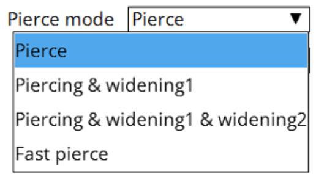
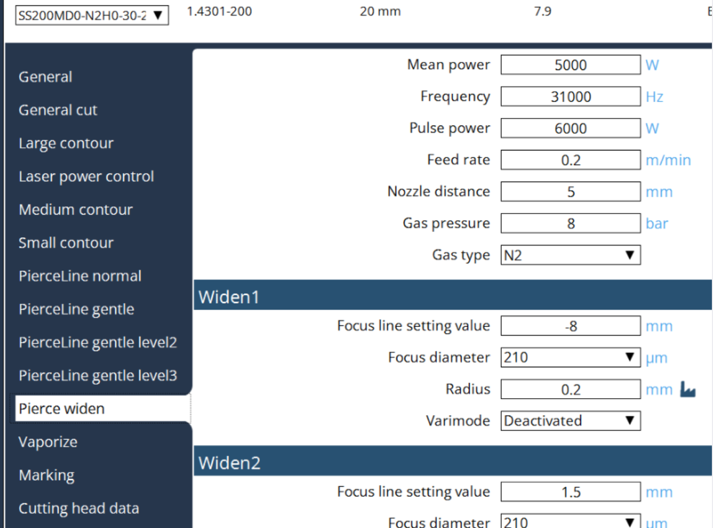

Perçage en plusieurs étapes
Vulcan Control prend en charge le perçage en plusieurs étapes avec élargissement du trou percé. Le perçage en plusieurs étapes est une fonction qui peut être utilisée pour percer une matière épaisse. Le perçage en plusieurs étapes peut être activé dans les tableaux technologiques.
La méthode peut être activée dans la boîte de dialogue de perçage :

Les paramètres individuels sont réglés dans les pages suivantes :
